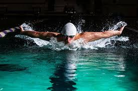
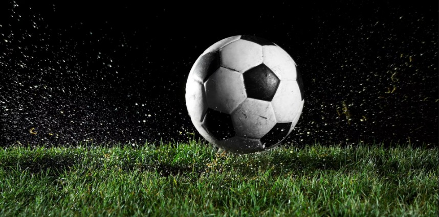
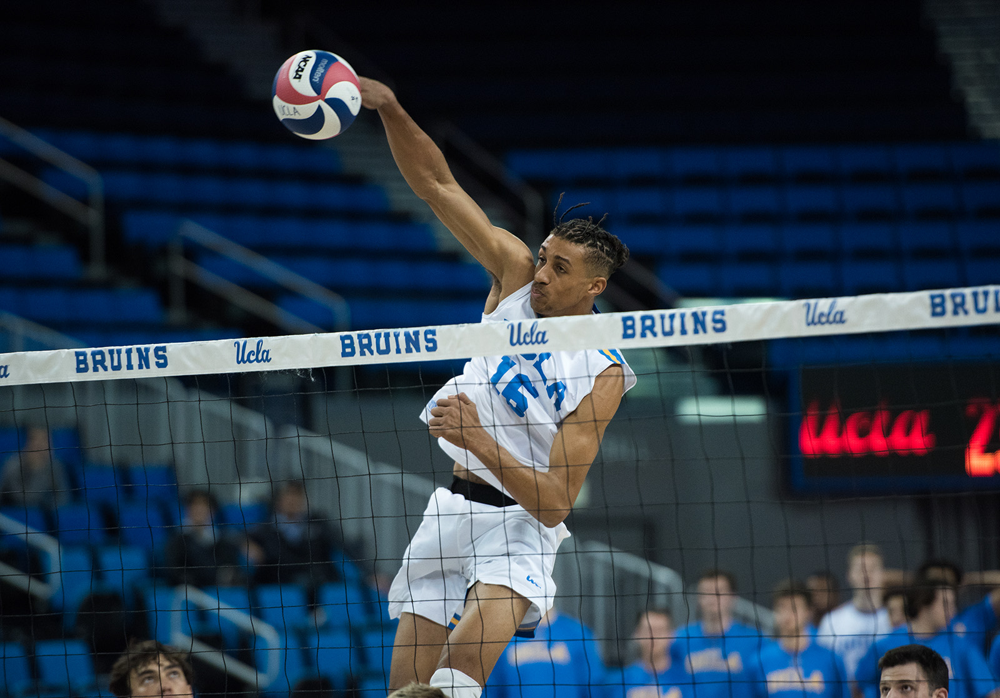
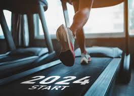
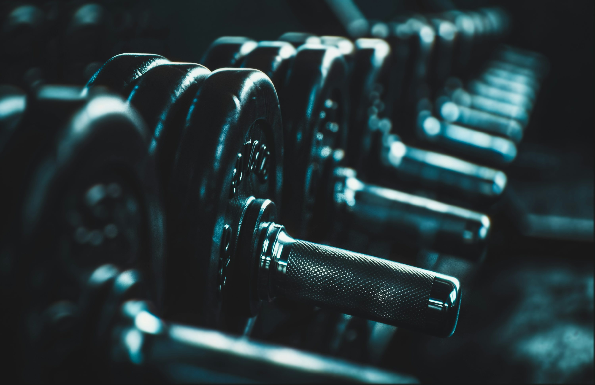
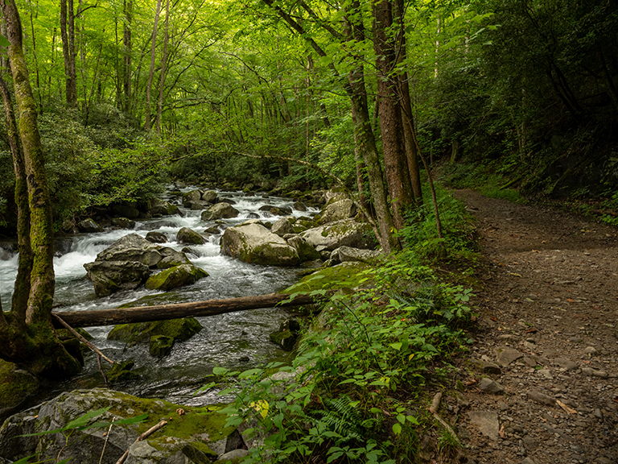

Sport & Fitness
Staying active is really important to me because it improves my day-to-day life. Training helps my energy stay high, keeps my mood positive, and makes it easier to handle stress. Moving every day helps me think clearer, sleep better, and feel stronger both mentally and physically.
I have been playing sports since I was little. My first sport was swimming, and it was not easy at the beginning. It takes discipline, controlled breathing, and a lot of patience. I joined the swimming team in high school, and it helped me build confidence and endurance. After that, I played soccer for about four years, which taught me coordination and team skills. Then I played volleyball for two years, and I enjoyed the communication and timing it requires. I also really love Hiking especially in the fall season. Now I stay active by running and going to the gym, focusing on strength and conditioning to stay in shape and feel my best.

Butterfly style is one of the hardest but i guess is my favorite

I really enjoyed soccer until I had a knee injury

Volleyball is my favorite sport till this day

I love to run either on treadmill or outside

I try to maintain going to the gym 3-4 days a week

Love to hike